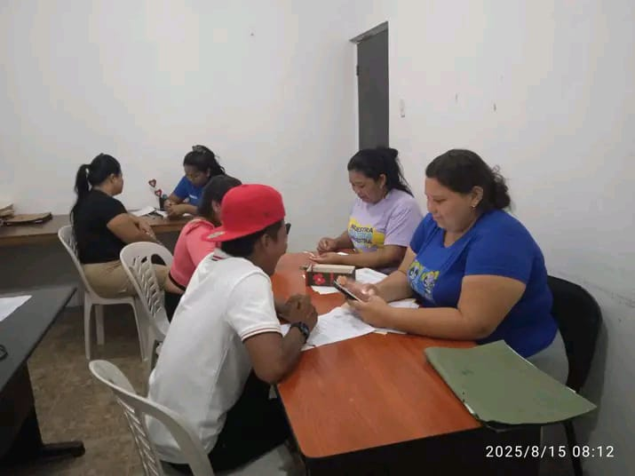

Departamento de Atención para el Sistema Patria
Protección social para el pueblo. Inclusión, eficiencia y bienestar.
Función del Departamento
Garantizar la integridad, precisión y actualización permanente de la data socioeconómica de los usuarios registrados en el Sistema Patria, para asegurar una asignación eficiente, equitable y dirigida de los programas sociales, bonos y servicios, minimizando la exclusión y optimizando el impacto de la protección social.
Galería de Fotos

Registro y actualización
Asignación de beneficios
Atención a usuarios